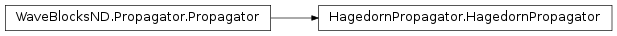

HagedornPropagator¶
About the HagedornPropagator class¶
The WaveBlocks Project
@author: R. Bourquin @copyright: Copyright (C) 2010, 2011, 2012, 2013, 2014, 2015, 2016 R. Bourquin @license: Modified BSD License
Inheritance diagram¶
Class documentation¶
-
class
WaveBlocksND.HagedornPropagator(parameters, potential, packets=[])[source]¶ This class can numerically propagate given initial values
 in
a potential
in
a potential  . The propagation is done for a given set of homogeneous
Hagedorn wavepackets neglecting interaction.
. The propagation is done for a given set of homogeneous
Hagedorn wavepackets neglecting interaction.-
__init__(parameters, potential, packets=[])[source]¶ Initialize a new
HagedornPropagatorinstance.Parameters: - parameters (A
ParameterProviderinstance) – AParameterProviderinstance containing at least the keydtfor providing the timestep .
. - potential – The potential the wavepacket feels during the time propagation.
- packet – The initial homogeneous Hagedorn wavepacket we propagate in time.
Raises: ValueError – If the number of components of
does not match
the number of energy levels  of the potential.
of the potential.- parameters (A
-
add_wavepacket(packet)[source]¶ Add a new wavepacket
to the list of propagated wavepackets.Parameters: packet (A tuple  with a
with a HagedornWavepacketinstance and an integer.) – The new wavepacket and its leading component
an integer.) – The new wavepacket and its leading component ![\chi \in [0,N-1]](../_images/math/b07aef8fb164e62cacfd4be92bc7aa04b49d6f7b.png) .
.
-
get_potential()¶ Returns the potential
used for time propagation.Returns: A MatrixPotentialsubclass instance.
-
get_wavepackets(packet=None)[source]¶ Return the wavepackets
 that take part in the time propagation by the
current
that take part in the time propagation by the
current HagedornPropagatorinstance.Parameters: packet (Integer or None) – The index (in this list) of a single packet
(in this list) of a single packet  that is
to be returned. If set to
that is
to be returned. If set to None(default) return the full list with all packets.Returns: A list of HagedornWavepacketinstances or a single instance.
-
post_propagate()¶ Given the wavefunction
 at final time
at final time  ,
perform some computations exactly once after running the ordinary
time propagation and before each time simulation data will be saved.
,
perform some computations exactly once after running the ordinary
time propagation and before each time simulation data will be saved.This method does not raise an exception but instead just does nothing and returns.
-
pre_propagate()¶ Given the wavefunction
at initial time  ,
perform some computations exactly once before running the ordinary
time propagation and after each time simulation data was saved.
,
perform some computations exactly once before running the ordinary
time propagation and after each time simulation data was saved.This method does not raise an exception but instead just does nothing and returns.
-
propagate()[source]¶ Given a wavepacket
at time  compute the propagated
wavepacket at time
compute the propagated
wavepacket at time  . We perform exactly one timestep of size
here. This propagation is done for all packets in the list
and neglects any interaction between two packets.
. We perform exactly one timestep of size
here. This propagation is done for all packets in the list
and neglects any interaction between two packets.More details can be found in [1].
[1] E. Faou, V. Gradinaru and C. Lubich, “Computing semiclassical quantum dynamics with Hagedorn wavepackets”, SIAM Journal on Scientific Computing, volume 31 number 4 (2009) 3027-3041.
-
 of components
of components  of
of  tuples.) – A list of new wavepackets
tuples.) – A list of new wavepackets  to propagate.
to propagate.